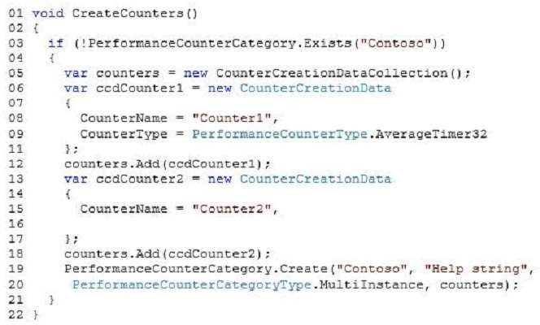

You need to ensure that Counter2 is available for use in Windows Performance Monitor (PerfMon).
Which code segment should you insert at line 16?
A. CounterType = PerformanceCounterType.RawBase
B. CounterType = PerformanceCounterType.AverageBase
C. CounterType = PerformanceCounterType.SampleBase
D. CounterType = PerformanceCounterType.CounterMultiBase
Correct Answer: B
Section: Volume A
Explanation
Explanation/Reference:
Explanation:
References: http://msdn.microsoft.com/en-us/library/system.diagnostics.performancecountertype.aspx
Explicación
La misma dada en la respuesta.
PerformanceCounterType.AverageTimer32
Un contador promedio que mide el tiempo que tarda, en promedio,
para completar un proceso u operación. Los contadores de este tipo muestran una
relación del tiempo total transcurrido de la muestra.
Intervalo al número de procesos u operaciones completados durante ese tiempo. Este tipo de contador mide
el tiempo en tics del reloj del sistema. Fórmula: ((N1 -N0)/F)/(B1B0), donde N1 y N0 son contador de rendimiento
lecturas, B1 y B0 son sus valores AverageBase correspondientes, y F es el número de tics por
segundo.
Por lo tanto, el numerador representa el número de tics contados durante el último intervalo de muestra,
F representa el frecuencia de los ticks, y el denominador representa el número de operaciones completadas durante el
último intervalo de muestra. Los contadores de este tipo incluyen PhysicalDisk\Avg. Segundos de disco/
Transferencia.
PerformanceCounterType.AverageBase: un contador base que se utiliza en el cálculo del tiempo o recuento promedios, como AverageTimer32 y AverageCount64. Almacena el denominador para calcular un contador a presente "tiempo por operación" o "recuento por operación".
Respuesta:
La misma dada en el ejercicio. La Opción B.Mostrando de manera visual la respuesta:

Fuentes:
https://docs.microsoft.com/es-es/dotnet/api/system.diagnostics.performancecounter?view=dotnet-plat-ext-5.0https://docs.microsoft.com/es-es/dotnet/api/system.diagnostics.performancecountertype?view=dotnet-plat-ext-5.0
https://docs.microsoft.com/es-es/dotnet/api/system.diagnostics.performancecounter.categoryname?view=dotnet-plat-ext-5.0